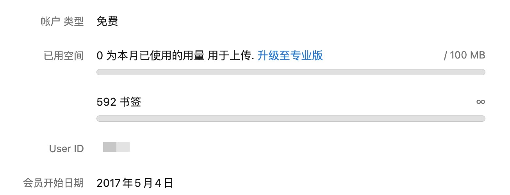

长期以来，我一直使用Raindrop作为我的书签管理服务，苦raindrop久矣。从2017年左右，一直用着免费版本的Raindrop，主要因为它那些付费版本的功能我也不太用得上，这些年也在其中积累下来大几百个书签，其中不少还标注了标签和备注方便查找。它倒是也能用，既支持多平台同步，又有网页版，最初免费版不支持创建嵌套的文件夹，后来也支持了，可以说功能上没啥大毛病。

然而这几年里，总想找机会把它换掉，无他，Raindrop的性能真是太差了。不仅各个平台的App都宛如网页版套壳，各种操作的响应也都非常慢。每次想添加新书签，还要在添加页面等一会儿，确定它同步完了再关闭窗口；搜索的时候，也经常弹不出搜索结果。为此，我一直在尝试各种书签管理工具，想找个满意的替代品，大致需求也不复杂：
- 性能良好，添加书签时的反应迅速
- 同时支持文件夹和标签两种分类方式，便于分大类和进行筛选
- 检索性能优秀
- 支持同步功能，需要至少有桌面与手机平台
- 最好能有独立App，而非依靠浏览器插件等形式实现
- 非订阅制，开源或可以买断
然而找了好久都没遇到合适的，许多开源项目都没有多端，或是同步起来相当费劲，亦或是书签多了后管理不便。一些付费服务页面fancy，但是性能巨差，或是性能好并且拥抱AI，于是每个月订阅费用感人。我还是希望能将书签管理与稍后读等内容管理分开的，避免混在一起检索起来麻烦，因此那些对内容的快速AI检索我也用不上。
前几年，也曾多次按月订阅试过Anybox，但最初不支持文件夹，支持Tag但不能手动调顺序，以至按类别检索效率略低。后来虽然更新出了标签嵌套，但截至目前还是不支持手动调整标签顺序，没法像文件夹那样方便。不过在最近的尝试中发现它支持了文件夹，甚至可以直接把Raindrop导出中的文件夹结构保留，解决了我主要的痛点。虽然软件为订阅制，但支持198元永久版买断，总比按月支出来得舒服。于是在又订阅了一个月把书签都导进来试用几天后，果断买断了，删除Raindrop，使用至今非常舒适。不管是软件本身提供的快速检索栏，还是结合了Raycast的插件，都异常丝滑，好好好！
甚至现在Anybox还可以将网页版归档下载下来保存，也许之后会把读过想储存的文章也迁移过来？
要说Anybox现在的缺点，估计就是没有网页版也不支持win吧，但我日常主要用Mac和iOS，倒也完全够用。